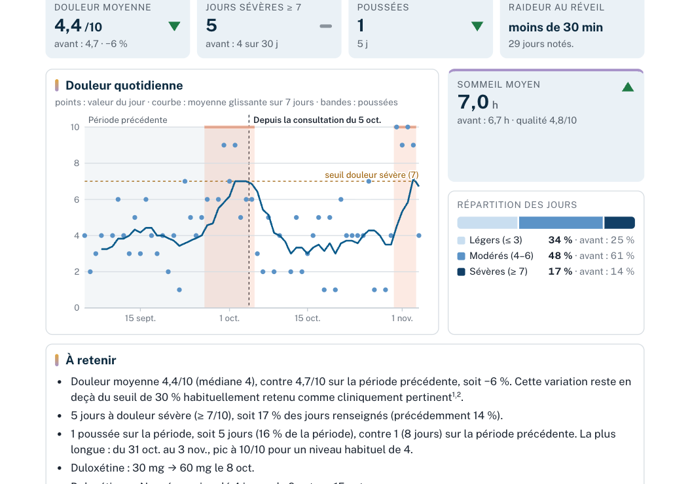
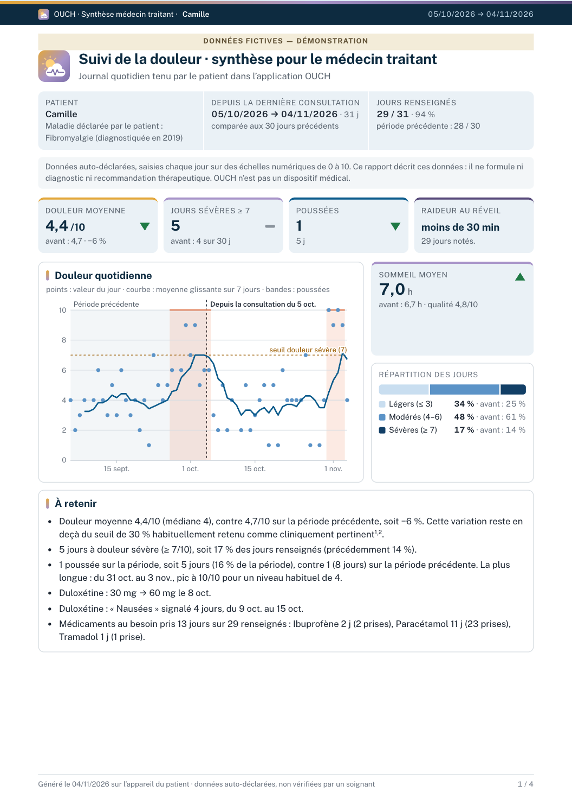

Pour les soignants
Un rapport OUCH,mode d’emploi.
Ce que c’est, comment le lire, ce qu’il ne dit pas.

Ce que c’est, comment le lire, ce qu’il ne dit pas.

Un carnet de douleur libre et gratuit, pour la fibromyalgie et les autres douleurs chroniques. Le patient y note sa journée en moins d’une minute ; le rapport en est tiré pour votre consultation.

1234Seulement le sens du changement depuis la période d’avant, pas son ampleur.
Vert : le sens favorable pour ce chiffre.
Orange : le sens inverse.
Trait gris : variation trop petite pour compter.
Une définition propre à OUCH, sans consensus : ce n’est pas un critère diagnostique.
Chiffres clés, courbe, répartition des jours, traitements, et ce que le patient veut aborder.
S’y ajoutent statistiques détaillées, poussées et les 3 jours d’avant, chaque symptôme, antalgiques, facteurs associés.
Données auto-déclarées, non vérifiées.
Échelles de fatigue, sommeil, humeur non validées.
Un rapprochement entre jours n’est jamais une cause.
Ni diagnostic, ni conseil de traitement.
La plaquette (2 pages) et la note méthodologique (12 pages : chaque formule, chaque seuil, chaque source) sont sur la page de la release. Vos relectures sont bienvenues.

Mode démo : 90 jours fictifs, sans rien saisir.